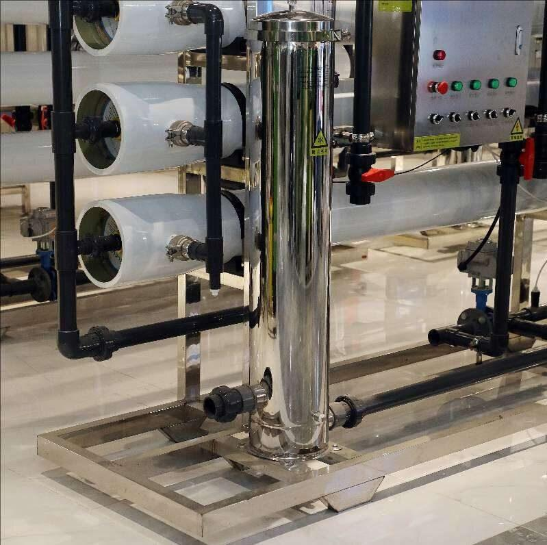

Sistem disinfeksi UV-C untuk air minum, output RO, AMDK, kolam renang, dan air limbah. Lampu UV tier-1 dengan dosis tervalidasi 40-100 mJ/cm² — efektif terhadap bakteri, virus, protozoa, tanpa residu kimia.

Disinfeksi UV (Ultraviolet) adalah teknologi penghilang mikroorganisme tanpa kimia yang menjadi standar global untuk air minum, AMDK, dan air proses industri. Cahaya UV pada panjang gelombang 254nm merusak DNA bakteri, virus, dan protozoa sehingga mereka tidak dapat bereproduksi — efektif menonaktifkan E.coli, Salmonella, Legionella, Cryptosporidium, Giardia, dan ratusan patogen waterborne lainnya dengan dosis tepat.
PT Tirta Sumber Makmur menyediakan UV sterilizer industrial dengan kapasitas dari 0,5 hingga 500 m³/jam, menggunakan lampu UV-C dari brand tier-1: Trojan UV, Atlantic Ultraviolet, dan Wedeco/Xylem. Setiap sistem dilengkapi sensor UV intensity, sleeve cleaner otomatis untuk lampu yang dipasang di air berkalsium tinggi, dan kontrol PLC untuk monitoring dan alarm — memastikan dosis disinfeksi terjamin secara konsisten, bukan hanya saat lampu baru.
Disinfeksi UV bekerja secara fisik (bukan kimia) — cahaya UV-C menembus dinding sel mikroorganisme dan merusak struktur DNA/RNA mereka. Mikroba tidak dibunuh secara harfiah, tetapi tidak dapat lagi bereproduksi sehingga aman bagi konsumen. Tiga komponen utama sistem UV TSM:
Yang membedakan dosis disinfeksi efektif dengan placebo adalah UVT (UV Transmittance) air baku — semakin keruh atau berwarna, semakin sedikit UV yang menembus. Sistem TSM mengukur UVT saat commissioning dan mendesain reactor dengan margin cukup untuk fluktuasi UVT musiman.
| Panjang Gelombang | 254 nm (UV-C germicidal) |
| Dosis Disinfeksi | 40 – 100 mJ/cm² (end-of-lamp) |
| Kapasitas Flow | 0,5 – 500 m³/jam |
| Tipe Lampu | Low-pressure / Medium-pressure |
| Umur Lampu | 9.000 – 12.000 jam (LP); 4.000 – 8.000 jam (MP) |
| Material Reactor | SS-316L food-grade |
| Material Sleeve | Quartz Heraeus (high-purity) |
| Standar Validasi | USEPA UVDGM, NSF/ANSI 55, DVGW |
Banyak supplier menjual "UV sterilizer" murah yang kelihatan sama dari luar — namun dosis disinfeksi nyata yang dihasilkan jauh berbeda. Berikut yang membedakan sistem UV TSM:
UV Polishing untuk Lab Universitas Airlangga — TSM mengintegrasikan UV sterilizer 254nm dengan polishing system Type I untuk lab biologi molekuler. Output mikroba < 1 CFU/100 mL secara konsisten — kritis untuk preparasi sampel PCR dan kultur sel mamalia.
UV untuk RO Hotel Bintang 5 — TSM memasang UV 20 m³/jam di outlet sistem RO komersial Ritz-Carlton untuk distribusi air minum, dapur, dan dispenser kamar tamu. UV menjadi safety layer terhadap potensi rekontaminasi pada jalur distribusi panjang. Tidak ada kasus kontaminasi mikroba sejak instalasi.
USEPA dan Permenkes 492/2010 mensyaratkan dosis UV minimum 40 mJ/cm² pada panjang gelombang 254nm untuk inaktivasi 4-log bakteri dan virus. Untuk patogen tertentu seperti Cryptosporidium, dibutuhkan dosis 12-22 mJ/cm². Sistem TSM standar dirancang dengan dosis 40-60 mJ/cm² pada akhir umur lampu untuk safety margin yang cukup.
UV-C (200-280nm) adalah satu-satunya yang efektif untuk disinfeksi karena merusak DNA mikroorganisme. UV-A (315-400nm) untuk tanning/curing, tidak efektif untuk disinfeksi. UV-B (280-315nm) digunakan untuk fototerapi medis, juga tidak untuk disinfeksi air. Lampu UV TSM beroperasi pada 254nm — tepat di puncak germicidal effectiveness UV-C.
Lampu UV low-pressure: 9.000-12.000 jam (kira-kira 12-15 bulan operasi 24/7). Lampu medium-pressure: 4.000-8.000 jam tapi output lebih tinggi per unit lampu. TSM menyediakan kontrak penggantian lampu tahunan dengan stok pabrikan asli (Trojan, Atlantic Ultraviolet, atau Philips/Signify) untuk memastikan dosis disinfeksi tetap di spesifikasi.
Membran RO sangat efektif menahan bakteri (>99,9%), tapi pada permeate side dapat terjadi rekontaminasi dari biofilm di pipa, tangki, atau valve downstream. UV sterilizer di outlet RO memberikan disinfeksi terminal yang menjamin air tetap steril sampai point of use. Untuk AMDK dan farmasi, UV adalah safety layer wajib selain RO dan ozon.
Banyak UV import murah menggunakan ballast magnetic basic dengan output UV yang menurun cepat, sleeve quartz biasa yang mudah pecah, dan tanpa sensor UV intensity. UV TSM menggunakan ballast electronic dengan output stabil, sleeve quartz Heraeus tahan panas, sensor UV intensity dengan alarm jika dosis turun di bawah threshold, plus konstruksi SS-316L food-grade. Hasil: dosis disinfeksi terjamin secara konsisten — bukan hanya saat lampu baru.
UV sterilizer adalah safety layer terakhir yang memisahkan air kualitas tinggi dari risiko kontaminasi mikroba. Konsultasikan kebutuhan disinfeksi UV Anda dengan tim engineer TSM — kami akan memilih reactor dengan dosis tervalidasi yang tepat untuk UVT air baku Anda dan kapasitas operasi yang dibutuhkan.
Tim engineer kami siap membantu Anda memilih reactor UV dengan dosis tervalidasi yang tepat.